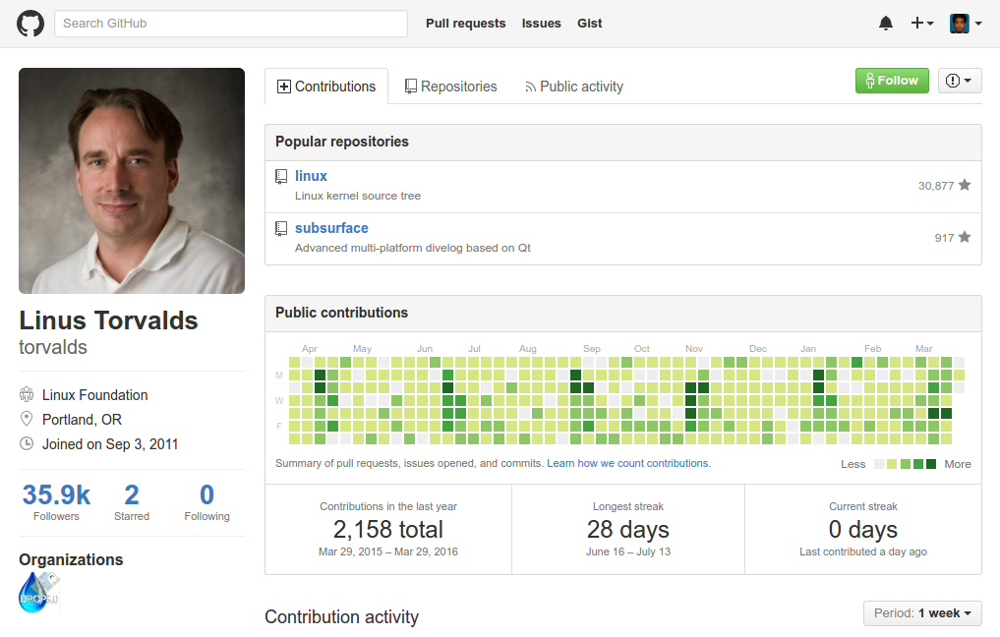

Cordova
Building Android Apps with Apache Cordova
by Zubair / zubairabuhasan@gmail.com / https://github.com/3ub41r
What are Hybrid and Native Apps?
Native Apps
Native apps are what typically springs to mind when you think of an app. You download them from the App Store or Google Play, they sit within your device’s applications and you launch them by tapping their icon.
Web Apps
If you’ve ever seen the 'mobile version' of a site, that’s what we’re talking about.
Common approach to building web apps are utlizing responsive designs.
Responsive design, you say?
Responsive Web design is the approach that suggests that design and development should respond to the user’s behavior and environment based on screen size, platform and orientation
Hybrid Apps
The bulk of the app is built using cross-compatible web technologies, such as HTML5, CSS and Javascript - the same languages used to write web apps.
Some native code is used however to allow the app to access the wider functionality of the device and produce a more refined user experience.
CSS?
CSS is a stylesheet language that describes the presentation of an HTML (or XML) document. CSS describes how elements must be rendered on screen, on paper, or in other media.
Javascript
JavaScript is a small, lightweight, cross-platform, object-oriented scripting language.
Inside a host environment (for example, a web browser), JavaScript can be connected to the objects of its environment to provide programmatic control over them.
Add code samplesPhonegap? Cordova?
PhoneGap is a distribution of Apache Cordova. You can think of Apache Cordova as the engine that powers PhoneGap, similar to how WebKit is the engine that powers Chrome or Safari.
Late last year (2011), Adobe/Nitobi donated the PhoneGap codebase to the Apache Software Foundation (ASF) for incubation.
The Environment
Lets get started!
Stuff You'll Need
- Node.js - https://nodejs.org/en/download/
- Android SDK (or Android Studio) - http://developer.android.com/sdk/index.html
- Genymotion (Android Emulator) - https://www.genymotion.com/
Stuff That Might Help
Windows
-
cmder (Comes with
git) - http://cmder.net/ - Sublime Text - https://www.sublimetext.com/3
Before We Start
Version Control (VCS)
Every good developer
should use version control.
E.g.: Git, Subversion (SVN), Mercurial
Git
Git (/ɡɪt/) is a widely used source code management system for software development. It is a distributed revision control system with an emphasis on speed, data integrity, and support for distributed, non-linear workflows.
Github
Vertical Slides
Slides can be nested inside of each other.
Use the Space key to navigate through all slides.
Basement Level 1
Nested slides are useful for adding additional detail underneath a high level horizontal slide.
Basement Level 2
That's it, time to go back up.
Slides
Not a coder? Not a problem. There's a fully-featured visual editor for authoring these, try it out at http://slides.com.
Point of View
Press ESC to enter the slide overview.
Hold down alt and click on any element to zoom in on it using zoom.js. Alt + click anywhere to zoom back out.
Touch Optimized
Presentations look great on touch devices, like mobile phones and tablets. Simply swipe through your slides.
Fragments
Hit the next arrow...
... to step through ...
... a fragmented slide.
Fragment Styles
There's different types of fragments, like:
grow
shrink
fade-out
current-visible
highlight-red
highlight-blue
Transition Styles
You can select from different transitions, like:
None -
Fade -
Slide -
Convex -
Concave -
Zoom
Themes
reveal.js comes with a few themes built in:
Black (default) -
White -
League -
Sky -
Beige -
Simple
Serif -
Blood -
Night -
Moon -
Solarized
Slide Backgrounds
Set data-background="#dddddd" on a slide to change the background color. All CSS color formats are supported.
Image Backgrounds
<section data-background="image.png">Tiled Backgrounds
<section data-background="image.png" data-background-repeat="repeat" data-background-size="100px">Video Backgrounds
<section data-background-video="video.mp4,video.webm">... and GIFs!
Background Transitions
Different background transitions are available via the backgroundTransition option. This one's called "zoom".
Reveal.configure({ backgroundTransition: 'zoom' })Background Transitions
You can override background transitions per-slide.
<section data-background-transition="zoom">Pretty Code
function linkify( selector ) {
if( supports3DTransforms ) {
var nodes = document.querySelectorAll( selector );
for( var i = 0, len = nodes.length; i < len; i++ ) {
var node = nodes[i];
if( !node.className ) {
node.className += ' roll';
}
}
}
}
Code syntax highlighting courtesy of highlight.js.
Marvelous List
- No order here
- Or here
- Or here
- Or here
Fantastic Ordered List
- One is smaller than...
- Two is smaller than...
- Three!
Tabular Tables
| Item | Value | Quantity |
|---|---|---|
| Apples | $1 | 7 |
| Lemonade | $2 | 18 |
| Bread | $3 | 2 |
Clever Quotes
These guys come in two forms, inline:
“The nice thing about standards is that there are so many to choose from”
and block:
“For years there has been a theory that millions of monkeys typing at random on millions of typewriters would reproduce the entire works of Shakespeare. The Internet has proven this theory to be untrue.”
Intergalactic Interconnections
You can link between slides internally, like this.
Speaker View
There's a speaker view. It includes a timer, preview of the upcoming slide as well as your speaker notes.
Press the S key to try it out.
Export to PDF
Presentations can be exported to PDF, here's an example:
Global State
Set data-state="something" on a slide and "something"
will be added as a class to the document element when the slide is open. This lets you
apply broader style changes, like switching the page background.
State Events
Additionally custom events can be triggered on a per slide basis by binding to the data-state name.
Reveal.addEventListener( 'customevent', function() {
console.log( '"customevent" has fired' );
} );
Take a Moment
Press B or . on your keyboard to pause the presentation. This is helpful when you're on stage and want to take distracting slides off the screen.
Much more
- Right-to-left support
- Extensive JavaScript API
- Auto-progression
- Parallax backgrounds
- Custom keyboard bindings